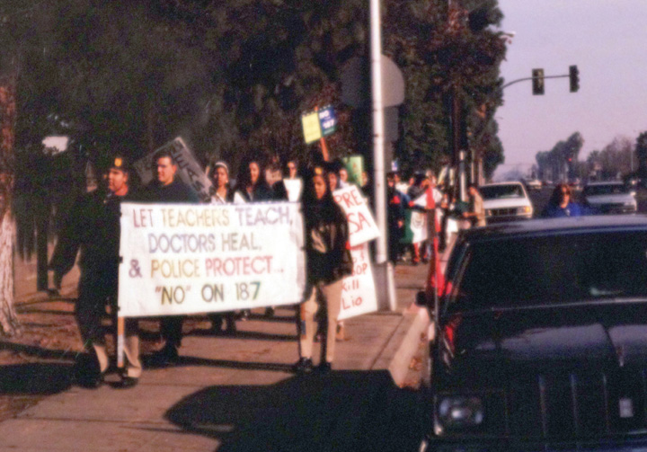
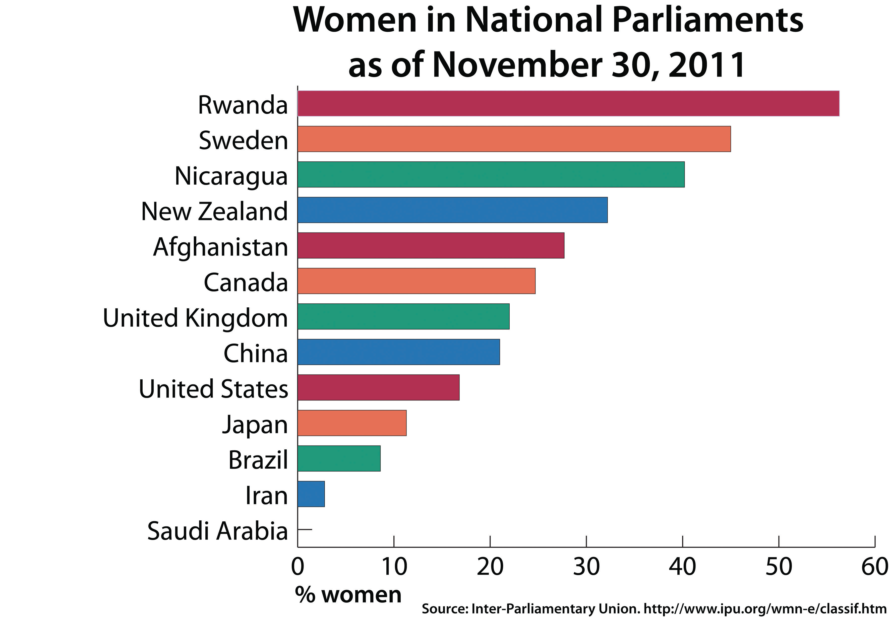
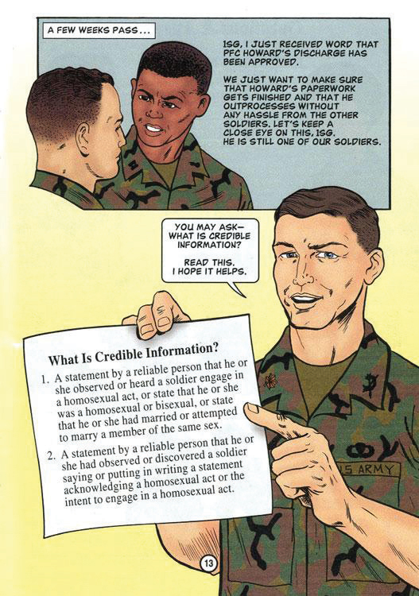

As toleration for diversity increased among Americans, many in the United States also became increasingly sensitive to labels used to describe various minority groups. This proved easier in theory than practice given the lack of unanimity among people of various Asian, Middle Eastern, African, South American, and Caribbean peoples. “Asian American” remained a popular moniker, but it was criticized for minimizing the rich diversity of the world’s largest continent. African visitors to the United States often wondered why they were called “African Americans,” especially in cities like New York where hundreds of thousands of recent immigrants from various African nations resided. In fact, more people of African descent have arrived in America in recent decades than during the centuries of forced immigration and slavery.
New citizens from Asia and Africa usually identify themselves by their country of origin rather than their continent of origin. They view themselves as Laotian, Cambodian, Kenyan, or Ethiopian. Some recent immigrants from Mexico prefer the term “Mexicano” or “Chicano” while those of Mexican ancestry who were born in the United States often favor “Mexican American,” “Hispanic,” or simply “American.” The new arrivals from the Caribbean and Central and South America likewise identified themselves as Cubans, Dominicans, Brazilians, or other terms depicting nationality. However, they often found themselves grouped along with Mexican Americans. By the 1980s, the term “Latino” gained currency as an all-inclusive label for all people from Spanish-speaking countries and cultures. Older terms such as Hispanic were regarded as offensive to some, largely because of the term’s implicit reference to European imperialists from Spain who had enslaved the Indian, African, and Mestizo ancestors of most “Hispanic” people. However, the term continues to be used to refer to people from Spanish-speaking nations and is often interchanged with Latino/Latina and other terms.
Some Americans resent the increased sensitivity regarding terms of identity, while many others simply want to be told what term they should use. Most nonwhite, native-born citizens appreciate the new sensitivity regarding their ethnicity but tire of being asked about their origins or even “welcomed” to their own country by strangers. Schools, government organizations, and corporations increasingly required “diversity training” intended to help educate and sensitize their members regarding the values and practices surrounding multiculturalismAn orientation of support toward various cultures and the people who originate from these cultures, as well as the belief that an organization benefits from diversity.. Because multiculturalism was difficult to define, some criticized these efforts as a way of stereotyping minorities or minimizing the ideas and contributions of nonminorities. Others believe multiculturalism unintentionally perpetuates stereotypical understandings of various groups. As a result, multiculturalism has resulted in greater understanding and appreciation for diversity even as perceptions of multiculturalism have fueled backlash.
On many occasions, backlash against multiculturalism was expressed in ways that clearly demonstrated the pervasiveness of racism in the twenty-first century. At other times, those who expressed anxiety regarding multiculturalism were expressing concerns about changing modes of popular cultural expression. Even more than the previous two generations, many American youths began to appropriate “black” cultural modes of expression. In contrast to suburban environs or the unapologetically old-fashioned rhythms of rural America, many youths came to glorify what they perceived to be a more intense mode of expression through rap music and hip-hop culture. Others were simply attracted to the hypermasculine posturing of gangsta rap. It also didn’t hurt that the music, fashion, and slang they adopted drove their parents crazy.
In many ways, these parents and their children were simply repeating cultural history. Norman Mailer’s 1957 White Negro described the hipster of the 1950s complete with baggy clothes and a suspicion that he was the only authentic article in a world of poseurs. “You can’t interview a hipster because his main goal is to keep out of a society [he believes] is trying to make everyone over in its own image,” Mailer explained. At the same time Mailer made it clear where the substance of the white hipster came from. “In this wedding of the white and black,” Mailer declared, “it was the Negro who brought the cultural dowry.” Some modern critics of gangsta rap would argue that most of this dowry had been spent by the turn of the twenty-first century. While many rap traditions survived, some of the most popular artists appealed more to white fantasies and misogyny than authentic black experience and cultural traditions.
Statistics regarding immigrant poverty and education were cited by those on both sides of the immigration debate. By the 1990s, 50 percent of Latino students enrolled in the major cities of California did not graduate high school. Whites perceived these statistics as evidence of a growing and potentially dangerous underclass. Latinos attributed the failure rate to a combination of economic and social issues that the state refused to address. Social conservatives in California united behind a 1994 ballot initiative known as Proposition 187A controversial ballot initiative that was approved by California voters and would have made it illegal for any undocumented alien to receive the benefit of public programs such as schools and health clinics. A federal court determined the measure was preempted by federal laws regarding the creation and enforcement of immigration law.. If passed, the proposal would bar noncitizens and undocumented aliens from government-funded services such as public schools and health clinics. Although the law’s passage would only exacerbate the problems facing Latino children of undocumented parents, the majority of white voters rallied behind the measure, which became known as the “Save Our State” initiative. In fact, white support for Proposition 187 was so strong that an unpopular Republican governor projected to lose his 1994 reelection bid in a landslide ended up defeating his Democratic opponent because of his outspoken support for Proposition 187.
Figure 14.13
Opponents of Proposition 187 march in Fresno, California.
Minority groups and liberals organized in a failed attempt to defeat the measure, arguing that Proposition 187 was motivated by racism and would not address concerns about illegal immigration. Activists also warned that the law would create a permanent underclass of Californians and was callous toward undocumented children who could not attend school or receive life-saving medical care. Federal courts quickly determined that many provisions in the new law could not be enforced because they conflicted with federal laws regarding immigration. Although the law was deemed unenforceable, the debate surrounding the measure polarized California politics along ethnic and party divisions. Two-thirds of Democrats opposed Proposition 187, while four out of five Republicans supported it. Nearly 80 percent of Latino voters opposed the law, while black voters split evenly and a majority of whites voted in favor of the measure. The law also spurred a renaissance of political activism among Latino voters throughout California and beyond.
The debate and subsequent legal action surrounding Proposition 187 led to a heated political debate about federal and state authority regarding immigration. In 2010, the Republican-dominated state legislature of Arizona approved a controversial measure that required state law enforcement officials to request documentation verifying the citizenship of anyone they had reason to suspect might be an illegal alien. All noncitizens were required to maintain documentation of their status, and any person caught without this documentation was subject to immediate deportation.
The strictest immigration law ever passed, Arizona Senate Bill 1070 soon became a subject of nationwide controversy. Although polls indicated wide support throughout the country, many believed that the law’s provisions were inspired by xenophobia and encouraged if not required racial profiling by police. As of 2011, many federal officials and even the president of the United States have expressed concerns about the constitutionality of the Arizona law. As a result, some politicians have called for the enactment of a Constitutional amendment that would deny citizenship to children born in America whose parents were not citizens—a provision that has grown in popularity following its proposal in 2005 but conflicts with the Fourteenth Amendment. Others believe the solution is stronger measures against the entry of undocumented aliens. Congress passed the Secure Fence Act of 2006 with bipartisan support. This law authorized the construction of up to 700 miles of fences and other barriers across the 2,000-mile border with Mexico. Areas without a fence were to be monitored by sensors and cameras.
In response to the Fence Act, thousands of students engaged in protests against the wall’s construction. The protests became defining features of colleges along the US border from the University of Texas at Brownsville to the University of Texas at El Paso, all the way to Arizona Western College, community colleges in San Diego, and major research institutions such as UCLA and San Diego State University. These students have joined millions of Americans of diverse backgrounds who believe that the wall is an ineffective method of curbing the entry of illegal drugs and immigrants into the county. They also believe that the construction of the wall sends a xenophobic message that violates the history and finest traditions of the American people. Many of these students have studied and adopted the tactics of the civil rights movement to express their views, arguing that the wall is a blight on border communities and a symbol of the second-class citizenship Latinos still hold in the United States.
Local business interests and political leaders joined the students, arguing that the wall and other measures ignore the reality of life along the border, where companies depend on the daily migration of workers to and from their homes in Mexico. Members of the Sierra Club and other environmentalists have also joined the protest, pointing out that many of the barriers violate federal statutes regarding the access to water for migrating animals. Humanitarian groups have expressed even greater outrage at the apathy expressed toward migrating humans. They believe that the fences have led many families to hire criminals to smuggle them into the United States, while others have been forced to take a much riskier path through deserts. As a result, hundreds of bodies have been discovered recently in the Sonoran Desert and other remote areas where there is no wall.
Immigration continues to be a controversial issue that reflects the persistence of cultural and ethnic tensions. Some believe that efforts to build an impassable border between the United States and Mexico is not only xenophobic but also less cost-effective than investing in overseas businesses that would create more jobs in Mexico and thereby removing the leading cause of illegal immigration. Given the recent loss of manufacturing jobs in the United States, such a measure is likely to encounter spirited opposition. One of the only proposed changes to America’s immigration policies that has enjoyed bipartisan support was a 2002 law regarding citizenship for soldiers. Republican President George W. Bush approved the measure that simplified and accelerated the process for citizenship for permanent residents (holders of Green Cards) who serve in the US military. Approximately 70,000 soldiers utilized these provisions to become citizens in the decade that followed. As of late 2011, journalists have estimated that 25,000 legal immigrants from all over the globe were serving in the US military and awaiting citizenship.
One of the most important changes in the last few decades has been the rapid increase in the number of women holding political office. The percentage of women in Congress hovered around 2 to 3 percent from the 1940s to the 1970s. This percentage jumped from 5 percent in 1990 to almost 15 percent by the year 2000, reaching 17 percent after the 2010 elections (a slight decline from the record number of ninety-five representatives and seventeen senators who composed the 111th Congress of 2008–2010). While the number and percentage of women in politics increased rapidly in the past thirty years, it is important to note that the percentage of women in the US legislature remains far below that of most developed nations. As of 2011, the congresses and parliaments of over seventy nations had a higher percentage of female membership than the United States. The global success of women as political leaders in nations as diverse as Norway, Cuba, Rwanda, Argentina, and Mozambique demonstrates the existence and spread of feminism beyond Britain and the United States. In each of the nations listed, women represent around 40 percent of elected representatives in their nation’s parliament.
Figure 14.14
This chart compares the number and percentages of women in various national legislative bodies around the globe.
Many scholars believe that feminism, at least feminism as a popular movement, receded slightly after the late 1960s and early 1970s. Many attribute the decline to the conservative political environment of 1980s America. However, the movement flourished internationally during the 1980s in Africa, Asia, South America, the Caribbean, and even some parts of the Middle East. America’s role in spreading ideas such as women’s suffrage is striking in places like Iraq and Afghanistan. As of 2011, a much higher percentage of women serve in parliament in these nations than within the United States.
Elsewhere, women won the right to vote independent of American influence and have been more progressive in terms of gender equality for many years. The location of the four United Nations Women’s Conferences, which have been held in Mexico City, Copenhagen, Nairobi, and Beijing, demonstrate the global nature of the feminist movement of which the United States is a participant rather than a leader. Hillary Clinton was one of the few mainstream American political leaders to even acknowledge the existence of the global feminist movement. As first lady, Clinton attended the 1995 UN Women’s Conference in Beijing. Clinton was only the second first lady to attend any UN conference on the status of women, the first being Eleanor Roosevelt who had been appointed to a leadership position within the UN six decades prior.
Some distinguish feminists of the 1990s and early 2000s as belonging to a third wave. Whereas the first wave sought the right to vote and the second sought legal and economic equality, the advocates of Third-Wave FeminismA term referring to present-day feminists who are attempting to avoid divisions along racial, ethnic, and class lines of the past in their quest for full gender equality. Third-Wave Feminists seek to remedy the lingering injustices that remain following the success of the first wave, which secured political rights for women, and the second wave’s legal victories regarding economic equality. define their movement as an effort to permit women to define for themselves what gender justice and feminism means. Born from a recognition that leading feminist organizations often failed to be truly inclusive in terms of race, ethnicity, and social class, the third wave also rejects notions of a single feminist ideal. For example, many feminists of the 1970s and 1980s advanced the notion of a middle-class and presumably white career woman competing in male-dominated fields as the ideal model of women’s liberation. Third-Wave Feminists hope to celebrate all women who use their own agency to determine and define what liberation means for themselves. As a result, Third-Wave Feminism is a difficult concept to define. Some feminists believe that the usefulness of labeling “waves” of feminism has passed. For example, bell hooks who is among the leading feminists of the modern era, writes about the difficulty and even the inherent contradiction of trying to define something as ubiquitous as feminism.
In recent years, feminist scholars have joined others, such as the late Derrick Bell, who have pioneered a body of scholarship known as Critical Race Theory (CRT)A body of scholarship dedicated to the study of the connection between structures of power and race, although CRT has increasingly come to incorporate gender, ethnicity, and social class. CRT is dedicated to the advancement of social justice and usually incorporates ideas and methods of inquiry from multiple academic disciplines, such as law, history, political science, and sociology.. CRT studies the ways that racism and sexism helped to create and reinforce a power structure that historically privileged white males over other Americans. In the past two decades, critical race theorists have used history and other fields to demonstrate how negative images rooted in slave experience have persisted. CRT is a diverse field of study that defies simple definitions or a single representative example. At the same time, the strength of scholars such as Derrick Bell and Darlene Clark Hine is the clarity of the examples they use. Two examples relating to race and gender are instructive: the way CRT scholars demonstrate how slave owners created the “jezebel” and “mammy” stereotypes.
The “jezebel” was a racist image that devalued black womanhood by equating a particular slave with a more primal creature who was unable to control her sexual urges. In so doing, white men who owned slaves transferred the blame for the rapes they committed on the “insatiable lust” of slave women who tempted the otherwise virtuous slave owner. The “mammy” was on the reverse end of the spectrum, a nonsexual, and therefore unthreatening and undesirable, drudge who cheerfully emancipated white women from their daily toil. Critical race theorists explain that these stereotypes led to the elevation of white women because they were contrasted against the negative images of the jezebel and the mammy. As a result, the denigration of black women created the image of white women as both virtuous and desirable. At the same time, these stereotypes allowed elite white men to define a very limited sphere of acceptable female behavior for the idealized woman—a pedestal that elevated and trapped a woman at the same time.
In this and many other ways, recent CRT scholars have shown how racism helped to pit black and white women against one another within a paternalistic society. These scholars argue that aspects of these stereotypes persisted beyond the end of chattel slavery in ways that continued to devalue black womanhood while defining white womanhood in elevated but restricted ways. According to this line of reasoning, issues of race, ethnicity, class, and gender came together in ways that permitted elite white males to define womanhood in racial and gendered terms. As a result, those who identify themselves as Third-Wave Feminists believe that celebrating diversity and encouraging women to define womanhood for themselves is a necessary corrective. In the end, attempting to precisely define Third-Wave Feminism may be an impossible task. Like those who came before them, Third-Wave Feminists are a diverse group of women who seek equality and justice while confidently living life on their own terms.
Some scholars began to refer to America as a “postracial” society at the turn of the twenty-first century. Violent protests that erupted in Los Angeles following the acquittal of police who were videotaped beating the motionless Rodney King in the summer of 1992 demonstrated otherwise. For three days, police and firefighters battled rioters and arsonists. The riots left fifty people dead and caused $1 billion in damages. Three years later, the arrest and subsequent acquittal of the NFL’s O. J. Simpson demonstrated that white and black Americans still perceived events differently.
As these incidents demonstrate, perceptions regarding the fairness of the criminal justice system often differed among white and black Americans. Angela Davis is a scholar, Black Panther, and former prisoner who was later acquitted of her alleged crime. Davis spent most of her life as an activist against what she believes are the injustices of the criminal justice system. Davis argues that the term prison-industrial complexA phrase conveying both the rapid growth of the US prison population and the idea that its growth is partially due to a collusion between political leaders and corporations within the multibillion-dollar industries that provide products and services used by the criminal justice system, such as private prisons and law enforcement equipment. is a more accurate term for America’s law enforcement system. She and others cite a host of studies that use statistics to demonstrate that courts are more prone to dismiss charges against whites and impose stiffer penalties on nonwhites.
Figure 14.15

This chart demonstrates the recent increase in the total number of inmates in prisons, jails, and juvenile facilities in the United States between 1920 and 2006.
Federal statistics show the prison population expanded from 200,000 inmates in 1970 to 2.2 million four decades later. Davis believes that race and poverty continue to play significant factors in this growth and rejects the assumption that the rapid growth of the prison population is simply the result of better law enforcement. “Most people commit crimes,” Davis believes, “some people are under much greater surveillance.” Davis and others also believe that the growth of the prison system reflects a society that sees incarceration as a simple and immediate way to deal with underlying social problems such as poverty and drug addiction. She and other activists compare the lobbying power of corporations and contractors in the prison industry to the military-industrial complex President Eisenhower described. They argue that just as the armament industry led to the expansion of military spending, the power of a multibillion-dollar law-enforcement industry has fueled the increase in the prison population.
Recent statistics show that one in four black men in their twenties is awaiting trial, in jail, or in some type of parole system. At the same time, one-third of college-aged African Americans have also attended college—a percentage near the US average. Recent policies designed to encourage black enrollment have been heavily scrutinized. For example, a conservative political group challenged the University of Michigan’s undergraduate admissions process that ranked candidates by a point system because that system included points for minority candidates. The point system still ensured that a minority candidate had impeccable credentials but would place a minority candidate ahead of a “white” candidate with equal scores.
Gratz v. Bollinger (2003) ruled that colleges could still seek to attract minority applicants and consider race when making admission decisions. However, the Supreme Court argued that Michigan’s point system was too rigid and therefore discriminated against white students. In a similar case that same year involving the University of Michigan Law School, the Supreme Court narrowly upheld the legality of an admissions process that considered race as a factor but did not award points or use a quota. The use of quotas had been disallowed by the 1978 Bakke decision, while the more recent Gratz case prohibited precise mathematical formulas that awarded points for being a member of a minority. The 5–4 split decision of the justices, along with the apparent mixed message permitting schools to use race as a factor in order to increase the diversity of their student body while limiting the use of clear and definable methods of doing so, confused many. The majority decision in the law school case, written by Sandra Day O’Connor, provided context but little specific guidance. O’Connor acknowledged that the present state of race relations was such that affirmative action was still needed to remedy past injustices while looking forward to the day a completely color-blind society might live by completely color-blind policies.
Some Americans believed that day had already come and gone, leaving the nation with policies that discriminated against whites. Two Supreme Court cases decided in June 2007 greatly limited the options for schools seeking racial diversity within cities whose neighborhoods remained racially segregated. In Seattle, a new system of determining school assignments allowed parents to choose any school in the city. When there were more requests than could be accommodated, preference was given to requests that helped encourage racial balance. A similar system operated in Louisville, with the addition of a few measurable standards regarding racial balance. No Louisville school could have fewer than 15 percent or greater than 50 percent black student populations. In Parents Involved in Community Schools v. Seattle School District No.1 (2007) and Meredith v. Jefferson County Board of Education (2007) the Supreme Court ruled that public schools could consider race when making assignments, but that both systems were too rigid. Both cases resulted in split decisions, with four of the nine Justices issuing dissenting opinions. These opinions raised the question of how any school district might create racially diverse schools in America’s cities if even the moderate and flexible plans of the Louisville and Seattle public schools were unconstitutional.
The question of governmental power and its limits was also the central issue regarding lawsuits that sought to challenge the proliferation of casinos on Native American reservations. In 1978, the Seminole tribe of Florida opened a bingo parlor on their land near Miami. State officials protested, citing Florida’s antigambling laws. The Seminoles filed a lawsuit challenging the state’s authority to enforce its prohibition against gambling on tribal land. Federal courts ruled in favor of the Seminoles, arguing that tribal sovereignty prohibited enforcement of state antigambling laws.
In response to the ruling, tribes throughout the nation began developing casinos on their reservations. Within a decade, gambling revenues nationwide exceeded several billion dollars. The proceeds were distributed to individual members as well as tribal governments. For many tribes, these nontaxed revenues have been critical to the construction of schools and small colleges. However, the majority of reservations are too isolated from urban populations to raise significant revenue. In some cases, casinos have led to increased poverty in the isolated communities they serve. In addition, many states have modified their laws to allow the operation of private and state-operated casinos. While these casinos generate millions in revenue for the states, these state-regulated casinos are usually located closer to major cities than most Indian reservations. As a result, some tribes that borrowed money or entered into delayed revenue-sharing agreements with casino operators face a severe budget crisis.
As a candidate, Bill Clinton pledged to end the ban on homosexual service in the United States Armed Forces. Clinton’s support of what many believed was an important civil rights initiative won him many supporters on the left during the Democratic primaries. In January of 1993, President Clinton announced that he was putting together a plan that would end all discrimination based on sexual orientation. The announcement drew a firestorm of opposition both within and outside of the military. Even the Chairman of the Joint Chiefs of Staff Colin Powell criticized the new president’s plan. In response, Clinton agreed to a compromise measure, a relatively cumbersome standard that was soon labeled Don’t Ask Don’t Tell (DADT)The commonly used name for the Department of Defense policy regarding the eligibility of homosexuals desiring to serve in the US military. The policy barred military members to inquire about a service member’s gender orientation. It also permitted homosexuals who did not reveal their gender orientation to serve in the military, but it required dismissal of any self-acknowledged homosexual. The policy was enacted by President Bill Clinton in December of 1993 until a federal court ruling in July 2011 barred its enforcement.. The new policy still banned homosexuals from joining the military, at least officially, but also banned military officials from requesting any disclosures regarding a member’s sexual orientation. It also prevented service members from voluntarily disclosing such information. In effect, Don’t Ask Don’t Tell permitted homosexuals to join the military so long as they remained “in the closet.”
Many gay rights activists were disappointed that the president had compromised his original position. Critics pointed out that the new policy required soldiers to lie about their identity in ways that stigmatized homosexuality. Others recognized that the president’s position was still well ahead of public opinion and cost him political support among conservatives and some moderates. Millions within the religious right were appalled by Clinton’s new policy. The president’s relationship with many conservative military leaders was also strained and would only gradually recover during the final years of his second term. The next seven years of Clinton’s presidency demonstrated ideological inconsistencies regarding gay rights that likely reflected political calculations of Clinton’s advisors rather than the president’s personal views. In 1996, Clinton supported the Defense of Marriage Act that legally defined marriage as a union between a woman and a man. Two years later, and well past the final election of his political career, Clinton signed an executive order that outlawed discrimination against any federal civilian employee because of their sexual orientation.
Figure 14.16
A 2001 US Army training aid describing the kinds of information that would be considered as credible evidence that a soldier was homosexual.
In 2003, the US Supreme Court invalidated a Texas law that made same-sex intercourse a crime. Also in 2003, the Massachusetts Supreme Court ruled that same-sex couples were legally entitled to the same privileges and obligations enjoyed by opposite-sex couples who desired marriage. Officials and clergy in cities with large gay populations, such as San Francisco, also began performing marriages. However, the California Supreme Court quickly ruled that these unions had no legal basis. In 2008, the California Supreme Court reversed course, overturning a statewide ban on gay marriage. Despite conservative support, attempts to pass a Constitutional amendment banning gay marriage failed on numerous occasions. However, thirty states have adopted similar prohibitions against gay marriage within their state constitutions.
Because most of these states already prohibited same-sex marriage, few of these measures have had any legal impact upon state law. As a result, many political observers believe that these laws and amendments prohibiting gay marriage were placed on the ballot by conservative politicians as a way to rally their supporters and assure a large conservative turnout at the polls. Others point out that the adoption of a state constitutional amendment banning gay marriage reduces the likelihood that a state would revise existing prohibitions. In addition, these provisions encourage the denial of the health care coverage, survivor benefits, and other protections enjoyed by heterosexual couples. As of 2011, only seven states and the District of Columbia had issued marriage licenses to same-sex couples. A few other states recognize the legality of same-sex marriages performed in other states. Although the 1996 Defense of Marriage Act sought to “protect” states from being compelled to recognize the legality of same-sex unions performed in other states, the fact that states must recognize the legality of heterosexual marriages performed in the United States has led many to question the Constitutionality of the 1996 law.
Candidate Barrack Obama promised to repeal DADT during his 2008 campaign. However, after becoming the president and commander-in-chief, he deferred to military officials, most of whom were opposed or divided on the measure. Gay rights activists, veterans, active soldiers, and progressive military leaders continued to press for the repeal of DADT, even as the president remained silent on the issue. Polls indicated opposition to the repeal of DADT until 2011, when many within the Joint Chiefs of Staff expressed their belief that repeal would not compromise the effectiveness of the US military. In July of 2011, a federal court declared that the provisions of DADT were no longer enforceable. The decision legally opened military service to all Americans regardless of their gender orientation. The military has since revised its policies and now trains personnel that discrimination against a military member because of his or her gender orientation is impermissible.